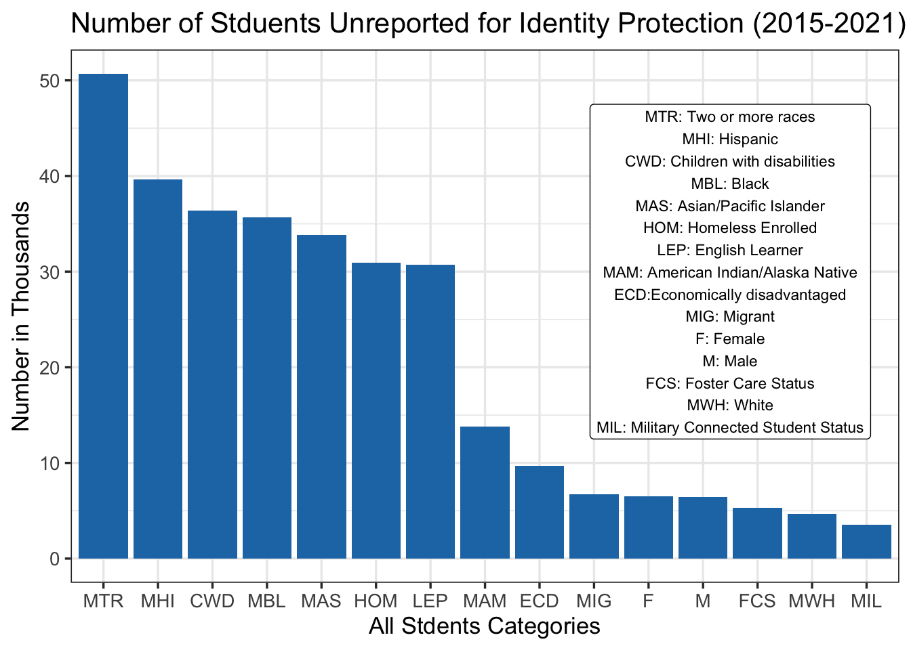

Chapter 3 Data
3.1 Sources
The data is collected by the Department of Education through annual district and state reports. It is being renewed/updated annually in each school year; the dataset includes academic performance data ranging from school year 2009-2010 to school year 2020-2021. At the time that we wrote our proposal the data for the 2020-21 school year was not available, but this data became available recently. We have incorporated this data in our analysis as well. Due to COIVID the Department of Education has waived the reporting requirements for the 2019-20 school year. There isn’t any data available for this year. Also, for the 2020-21 school year the participation rate is varied and we have many school districts with missing data. This pattern is explored in our result section. For this project we will be focusing on The state of New York for the past 5 years.
Link to Source: https://www2.ed.gov/about/inits/ed/edfacts/data-files/index.html
Datasets:
- SY 2020-21 Achievement Results for State Assessments in Mathematics (LEA)
- SY 2020-21 Achievement Results for State Assessments in Mathematics (LEA)
- SY 2018-19 Achievement Results for State Assessments in Mathematics (LEA - Wide file)
- SY 2018-19 Achievement Results for State Assessments in Reading/Language Arts (LEA - Wide file)
- SY 2017-18 Achievement Results for State Assessments in Mathematics (LEA)
- SY 2017-18 Achievement Results for State Assessments in Reading/Language Arts (LEA)
- SY 2016-17 Achievement Results for State Assessments in Mathematics (LEA)
- SY 2016-17 Achievement Results for State Assessments in Reading/Language Arts (LEA)
- SY 2015-16 Achievement Results for State Assessments in Mathematics (LEA)
- SY 2015-16 Achievement Results for State Assessments in Reading/Language Arts (LEA)
3.2 Cleaning / transformation
Link to data transformation script: https://github.com/soheilkashan/education-assessment/blob/main/data/data_prep_sk.R
The data is reported on two different levels of aggregations: LEA level (local education authority) and School level. We are mostly interested in LEA level data for this analysis. Mathematics State Assessments results and Reading/Language Arts are also se into two files. There are two different formats for the latest data: Wide (each value of a subgroup is a field), Long (each value of a subgroup has its own record). Throughout the years there are some inconsistencies
We have spent a considerable amount of our time transforming and preparing the data for visualization. We will explain some of the challenges we face here. The data is reported on two different levels of aggregations: LEA level (local education authority) and School level. We are mostly interested in LEA level data for this analysis. Mathematics State Assessments results and Reading/Language Arts are also separated into two files. We have filtered the data to include only the state of New York. There are two different formats for the latest data: Wide (each value of a subgroup is a field), Long (each value of a subgroup has its own record). Throughout the years there are some inconsistencies in the data formats. Some years the data is only reported in wide format and some years only in long format. The wide format usually contains 260+ variables. The variables are the combination of categories (race, gender, special status, etc.), school year, grade, and the metric. After exploring different options we have decided to transform all of the wide data to the long format.
Another challenge with our data was the grouping and masking of the “Percentage of Proficient” metric. Due to privacy reasons to protect the identities of students. The Percent Proficient is reported as “PS” if the number of students is less than 5. If the number of students are between 6 and 15 the Percent Proficient is only reporting more than or less than 50%. For some of our analysis we have removed these rows but kept the data for demographic analysis of the data. For reporting groups with students less than 300, the data is reported in ranges. We have used the mean of the range to calculate the Percent Proficient.
Category variable in our data contains all student types descriptors (race, ethnicity, sex, and socioeconomic status). We have appended a category description and a category type to help us map the data easier. One of the biggest drawbacks in the data is that due to the reporting method for categories, we cannot perform analysis on the cross section of different categories. For example, we cannot analyze the relationship between socioeconomic and race and the impact of that on education assessment results.
After the transformations we have a data set with 10 variables and 883K rows.
- SCHOOL_YEAR: reporting school year
- DISTRICT: NY school district name
- SUBJECT: MTH for mathematics and RLA for reading / language arts
- GRADE: school grades including HS for high school
- CATEGORY: abbreviated student category includes race, ethnicity, socioeconomic status, sex, etc.
- CATEGORY_DESC: student category description
- CATEGORY_TPYE: category type includes race/ethinicity, sex, special status
- NUMVALID: number of students
- PCTPROF: percentage of students proficient in the assessment reported in the data with ranges and masked data
- PASSED: transformed percentage of students proficient converted to numeric
Link to the 2020-21 documentation: https://www2.ed.gov/about/inits/ed/edfacts/data-files/assessments-sy2020-21-public-file-documentation.docx
3.3 Missing value analysis
As discussed in the previous part, if the student numbers are less than 5 in a category / grade for a district, the Percent Proficient numbers are masked to protect the students identity. Although this is not null values in the data we cannot perform any analysis at the performance level. In this graph we are exploring what student category is impacted most by the suppression of data. We can see that students with two or more races (MTR) are impacted the most by the masking of the data. There are more that 50k students in total that their proficiency results are not available over the 5 year school period that we have done our analysis. This graph can also indicate student bodies that are the most sparsely distributed among all districts / categories. While we might not be able to fully analyze the impact of the masked data on the performance results we have highlighted this missing data here.

As a result of the data structure and the transformations outlined before null values were generated for the PASSED variable (numeric value of Percent Proficient). If the Percent Proficient is marked as PS we have a null value for PASSED. If in the wide format a Percent Proficient is not reported for a grade or category we will also have a null value. We have also observed that there are very small school districts with only high school grades and all other grades are missing. It appears that some districts might not offer all grades but the data is reported as missing for these districts. Further discussion with subject matter experts needed to clarify school district boundaries and reporting requirements to fully understand the missing data patterns. Here we have used the VIM package to visualize the missing data pattern. If NUMVLAID (student number) is missing we always have missing values for PASSED (32% of data). The scenario when we have missing data for PASSED but the NUMVALID is not missing is due to the transformation of PS (suppressed data for privacy protection). We have converted PS to null values so we can have a numeric value for the PASSED variable (this is about 19% of data).
## Error in aggr(ny_edu_final, sortVars = TRUE, cex.axis = 0.8, oma = c(10, : non-numeric argument to binary operator